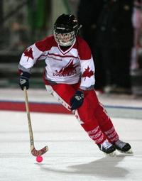

A bandy története
A bandy szabályai
|
A bandy szabályai

- A jégfelület: A bandy-t futballpálya nagyságú területen játszák
- Csapatok: Minden csapatnak 11 játékosa van egyszerre a pályán.
- Csere: A játékosok bármikor cserélhetõk a játékidõ alatt.
- Játékidõ: Kétszer 45 perc játékidõben játszák.
- Beütés: Ha a labda kiment az oldalvonalon, ugyanott kerül vissza a játékba, az által a csapat által, amelyik nem ütötte ki.
- Sarokütés: Mikor a labda elhagyja a játékteret a záróvonalon, sarokütés következik, ha a védõk értek utoljára a labdához. A védõjátékosoknak fel kell sorakozni a gólvonal mögött, addig a pillanatig, amíg a támadó játékos be nem üti a labdát a sarokpontról, eközben a támadójátékosoknak kívül kell tartózkodniuk a büntetõ területen.
- Szabad ütés: A szabályszegést (gáncsolás, feltartás, les) büntetik vele, a büntetõ területen kívül. Ezekért büntetõ pont jár.
- Kapus kidobás: Mikor a támadó a labdát a védõvonal mögé juttatja, a kapus kiveszi a labdát a hálóból és a büntetõterületen
kívül, bármelyik saját játékosának dobhatja.
- Bírók: Két játékvezetõ, a fõ vagy bajnoki meccseken, három.
- Kapusok: A bandy kapusok nem használnak ütõt, de a büntetõ területen belül a kapus használhatja a korcsolyáját vagy
bármely testrészét, hogy megállítsa a labdát. Használhatja a kezét, hogy elkapja labdát és dobhassa a csapattársainak.
- Játék a labdával: A játékosok ütõvel érhetnek a labdához, nem használhatják a fejüket, kezüket, karjukat, és nem emelhetik az ütõt a válluk fölé.
- Játék az ellenféllel: A játékosok fizikai kihívással élhetnek az ellenféllel szemben, akinél a labda van, de nem üthetnek,
gáncsolhatnak, nem tolhatják, nem foghatják és akadályozhatják az ellenfelet. A játékosok nem üthetnek az ütõvel, és nem emelhetik, vagy
nem üthetik az ellenfél ütõjét.
|